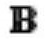

Text Decoration
PowerPoint offers many text decoration features and adds to the aesthetic sense of a presentation. These features can be accessed from the Home ribbon under the Font group.
Given below are the various font decoration features and their functions in PowerPoint.
| S.No |
Icon & Description |
| 1 |

Makes the font face bold
|
| 2 |
Makes the font face italics (slanted font)
|
| 3 |

Underlines the font face
|
| 4 |
Adds shadow to the font face
|
| 5 |
Strikes through the font face
|
| 6 |
Adjusts the character spacing for the font. Predefined settings are very tight, tight, normal, loose and very loose. There is a user defined space setting available too.
|
Besides these, there are some other font decoration features that can be accessed from the Font dialog. To open the Font dialog, right-click on the selected text and select Font.
The table below describes the additional text decoration features in the Font dialog.
| S.No |
Icon & Description |
| 1 |
Double Strikethrough
Adds two strike lines over the text
|
| 2 |
Superscript
Raises the text above the normal text. For example, the use of "nd" in 2nd
|
| 3 |
Subscript
Shrinks the below the normal text. For example, the '2' in H2O the chemical formula of water
|
| 4 |
Small Caps
Changes the entire text to small caps
|
| 5 |
All Caps
Changes the entire text to capital letters
|
| 6 |
Equalize Character height
Adjusts the characters so that all are of the same height regardless of the caps setting
|